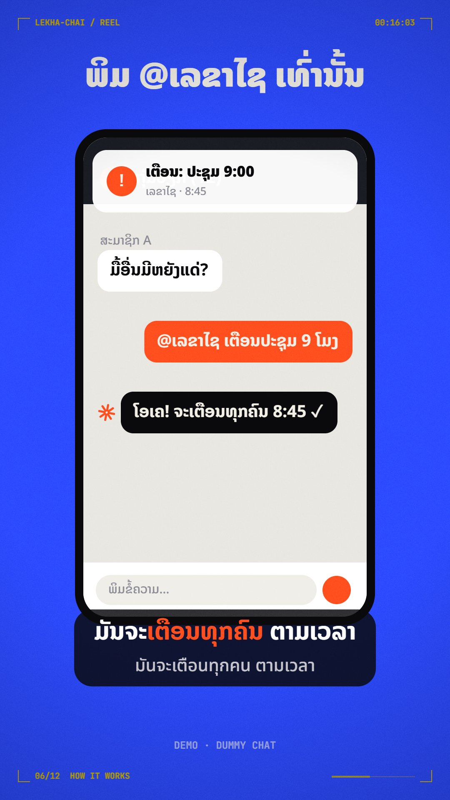

ພາບຈຳລອງ (ຂໍ້ມູນສົມມຸດ)
AI AGENT
ເລຂາໄຊ — ເລຂາ AI ໃນກຸ່ມ LINE
- ບັນຫາ
- ໃນກຸ່ມວຽກມີຂໍ້ຄວາມຫຼາຍ ຈົນລືມນັດ ແລະ ຫາຮູບສຳຄັນບໍ່ເຈີ.
- ວິທີແກ້
- ພິມ @ເລຂາໄຊ ໃນກຸ່ມ — ມັນຈະບັນທຶກນັດ, ເຕືອນທຸກຄົນຕາມເວລາ, ຕອບຄຳຖາມດ້ວຍ AI ແລະ ເກັບຮູບທີ່ເລືອກໄວ້.
- ເຕັກໂນໂລຢີ
- ລະບົບກວດເວລາທຸກນາທີ (Cron), ຖານຂໍ້ມູນ SQL, AI ໃນ Cloudflare.